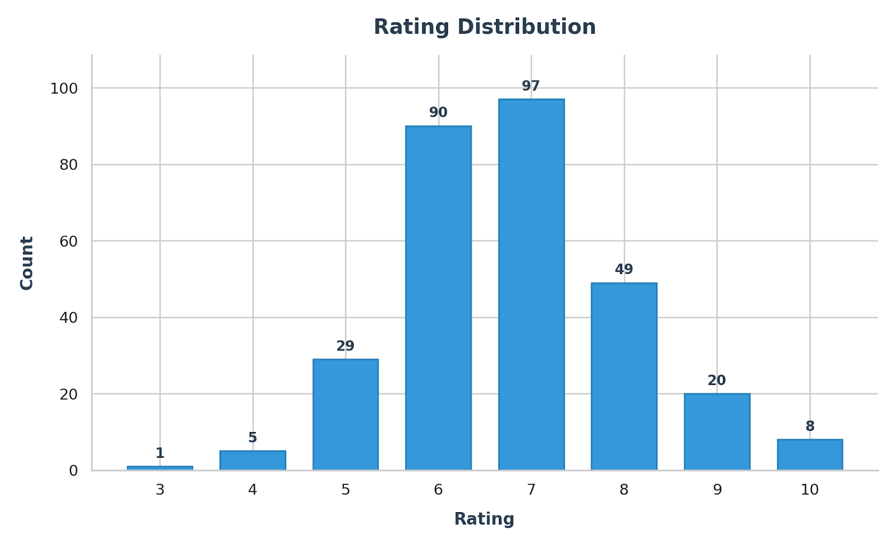

2026-07-31
After rating 300 albums, I realized my scores say less about “quality” and more about context, attention, and expectation—and that made me question whether numeric ratings are even the right tool for capturing why music matters.
Let’s start with my current ratings breakdown:

As you can see, I generally don’t hate much of anything. Over 62% of my ratings fall in the 6-7 range. This makes sense to me as I generally just LIKE music. It’s difficult for me to actively dislike something so much that I disregard it entirely. This got me thinking about the value of my rating system in general.
As evidence, let’s take a quick look at my 6 lowest rated albums (some of them may surprise you and certainly surprised me):
As you may have noticed, at least 4 of those are widely considered to be excellent albums. So, what’s going on here? If I generally like music, why did I rate these widely celebrated albums so low? I think the answer is that I had high expectations and came away disappointed. It’s basically expectation–disconfirmation: the more I go in expecting to love something, the more “meh” can feel like “bad.”
This realization got me thinking about how I’m applying my ratings more broadly. If we include 8’s with the 6’s and 7’s they account for almost 80% of all my ratings. If there isn’t that much difference between a 6, 7, and 8 then my 10-point scale is basically acting like a 3-point scale.
I don’t like it (3/4/5): 35 albums
I like it (6/7/8): 236 albums
I love it (9/10): 28 albums
So, perhaps a simplified 👍, 👎, ♥️ system is just as valuable as my current 10 point rating system? On the surface, I’d say yes. However…
This simplified rating system certainly aligns much better with how I’m currently rating albums but there was still something else bugging me: Why are soooo many of my ratings in the 6/7 range? Answering this took some introspection and a look into how I select what to listen to and how/when I listen to it.
Almost all of the albums I’ve listened to so far have come from 1 of 2 places:
None of these sources are omniscient but the are going to steer me towards albums that have some consensus around them of being “good.” Selection bias is compressing my ratings.
I think this one comes down to my personal values and general outlook on life. Even if I don’t like something I’m hesitant to completely dismiss it. And, really, what is the goal of this project? To listen experience new and different types of music and decide what I like and don’t like. It’s about enjoyment, not objectivity.
Sometimes I listen to an album a couple times and wasn’t really paying attention so I just throw a 6 or a 7 on there and move on rather than taking the time to listen more intentionally. But here’s the thing: when I’m “mailing it in” I’m not necessarily being lazy — I’m sort of changing what I’m rating. Rather than the album itself, I’m sort of rating the context I heard it in. This is sometimes impossible to ignore…
I’ve listened to the 2014 album Awake by Tycho like 3 times now all the way through. In all three occasions I was at work and it just sort of faded into the background. One could argue this is bad or maybe it’s really good because it didn’t distract me. So maybe this is like a 10/10 album for background work but like a 1/10 for something else? The consensus I’ve seen online is that this is an excellent album. (for reference it has a 7.0 on Pitchfork and I gave it a 6/10) This observation leads me to…
The Tycho thing made me notice something bigger. Music, like anything else life, isn’t experienced in a vacuum. Like most people I listen in a bunch of different modes:
So, asking “is this a good album?” is really only half of the question. The other half is “what is it good for?” If my rating system is meant to be useful to my future self, then maybe I need to take context into consideration. I’m thinking about it like a wine and food pairing. What’s an album that will pair will with, say, preparing and enjoying a meal with my girlfriend, or going for a long drive, or when I need to focus? In other words: keep the rating, but attach the use-case. Now, THAT would be useful.
So, let’s revisit Awake by Tycho. Instead of: 6/10 my final rating would look like:
| Album | Artist | Year | Genre | Rating | Good For |
|---|---|---|---|---|---|
| Awake | Tycho | 2014 | Electronic | 👍 | focus reading sleeping |